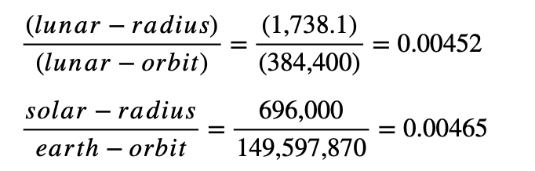

https://doi.org/10.13140/RG.2.2.31434.03521
********************************************************************************************
Fundamental Content
Genesis Project strives to solve the mystery of creation. At the bottom of each page in parts 1, 2. 3 .4 .5 ,6 there will be links to click on; they will take you to the old homepage, not the new one(Last updated Dec 16 2020)
There is some indication that artificial intelligence elements and biological life elements are not just mathematical constructs (as opposed to chemical constructs) but that they describe one another. As such, if we can show that these mathematical constructs are invariant under transformation, then they are tensors and are Natural Laws. Ultimately these tensors must be explained with Quantum Chemistry.
It may be that, ultimately, to solve the mystery of the origin of life we need to include the AI elements and their connection to biological life. I believe it is a purpose of biological life (H, N, C, O) to discover the properties of (P, B, Si) so it can make computing machines, which are ultimately necessary to its survival.
********************************************************************************************
1.0. Possible Signature
Something extraordinary is suggested by what we constructed in my paper Abstract Cosmology. Here we write it out explicitly. You can see something is going on here, but I wouldn’t be too hasty in taking this on its own without reading the full work itself to see how I arrived at these equations, and just what is behind them. But it looks to me that it may be a signature on the work we call creation. In that
Eq. 1 (1/𝛂²m𝑝)√(h4𝛑r𝑝²/Gckv𝑒)⋅(KE Earth)/(KE Moon)(Earth Day)=ℂ
𝛂=fine structure constant (1/137)
h=planck’s constant
G=Universal Gravitational Constant
m𝑝=mass of proton
𝑝²=radius of proton
v𝑒=orbital velocity of earth
KE mean kinetic energy
ℂ Stands for six protons (carbon)
Eq. 2 6(KE Earth)(Earth Day))/(KE Moon)~1second
Eq. 3. k=√[(1/mᵢ²)⋅(h(1+𝛂)/G)⋅N𝒂𝔼]
It is almost as if it is to say the moon was made to have the size and mass it has so that it would connect to carbon the basis of life, so that we could discover the connection and thus be able to know that something made life and the earth for a reason. It could be like a signature by the creator on their work.
Indeed we would have to be astronomers to figure that out, but there is something that has been clear even to our ancient ancestors back to the time they first looked to the sky from the campfire where they cut up their food with stone knives, and that was that the moon appears to be the same size as the sun and every so often eclipses it perfectly. There is something letting us know there is mystery before us because
Eq. 3. (Lunar_Orbit)/(Earth_Orbit)=384,400km/149,592,870km=0.00257
Eq. 4. (Lunar_Radius)(Solar_Radius)=1,738.1/696,000=0.0025
Which are approximately equal. As well we can look at it as:
Eq, 5. (Lunar_Radius)/(Lunar_Orbit)=(1738.1/384400)=0.00452
Eq. 6. (Solar_Radius/Earth_Orbit)=696,000/149,597,870=0.00465
Which are about the same as well. The interesting thing is that since our ratios are around 0.0025 and 0.0045, then…
Eq. 7. (0.0045)/(0.0025)=9/5=1.8
I say this is interesting because this is the ratio of the precious metal gold (Au) to that of silver (Ag) by molar mass these elements being used for religious and ceremonial jewelry:
Eq. 8 Au/Ag=196.97/107.87=1.8
We have:
Eq. 9 (Solar_Radius)(Lunar_Orbit)=Au/Ag
When we look at the equation (Equation 1)
(1/𝛂²m𝑝)√(h4𝛑r𝑝²/Gckv𝑒)⋅(KE Earth)/(KE Moon)(Earth Day)=ℂ
It suggests as well that the moon might somehow be integral to life, which is an extraordinary thing to suggest because we have always thought it is nothing more than a rock that happened to form in orbit, having really no role in making life possible. Thus for it to be otherwise, perhaps since it affects the tides and life began in the ocean, it played a role in life coming out of the sea to walk upon land.
2.0 The Next Step
Clearly what we need to do here is…If we have considered the orbital periods and sizes of the earth and moon and these determine the fact that the moon perfectly eclipses the sun (The orbital period is a function of distance from body orbited) and we have found one second in the kinetic energies of these bodies, then since kinetic energy is a function of mass, then the masses of the moon and and earth should have some significant connection to their radii in connection with this possible signature. And indeed we should compare these ratios to their respective orbital velocities. We do that here:
For the moon:
M𝑚/R𝑚=(7.34767E22kg)/(1,738,100m)=4.2274E16 kg/m
(M𝑚/R𝑚)(orbital velocity)=(4.2274E16 kg)(1.3259E10m/s)=5E6E26 kg/s
For the earth
Me/Re=(5.97E24kg)/(6,371,000m)=9.37E17 kg/m
9.37E17 kg/m(3.852E11m/s)=3.6E29 kg/s
Abstract cosmology was founded upon proton-seconds. This is a related concept (kilograms per second) This is the action of mass per time of the the respective motions of the earth and the moon, I think this is exactly what we want to be looking at.
***********************************************************************************************
Referring to my book Abstract Cosmology
Something extraordinary is suggested by what we constructed in my paper Abstract Cosmology. Here we write it out explicitly. You can see something is going on here, but I wouldn’t be too hasty in taking this on it own without reading the full work itself to see how I arrived at these equations, and just what is behind them. But it looks to me that it may be a signature on the work we call creation. In that
It is almost as if it is to say the moon was made to have the size and mass it has so that it would connect to carbon the basis of life, so that we could discover the connection and thus be able to know that something made life and the earth for a reason. It could be like a signature by the creator on their work.
Indeed we would have to be astronomers to figure that out, but there is something that has been clear even to our ancient ancestors back to the time they first looked to the sky from the campfire where they cut up their food with stone knives, and that was that the moon appears to be the same size as the sun and every so often eclipses it perfectly. There is something letting us know there is mystery before us because
Which are approximately equal. As well we can look at it as:

Which are about the same as well. The interesting thing is that since our ratios are around 0.0025 and 0.0045, then…I say this is interesting because this is the ratio of the precious metal gold (Au) to that of silver (Ag) by molar mass these elements being used for religious and ceremonial jewelry:
We have:
When we look at the equation

It suggests as well that the moon might somehow be integral to life, which is an extraordinary thing to suggest because we have always thought it is nothing more than a rock that happened to form in orbit, having really no role in making life possible. Thus for it to be otherwise, perhaps since it affects the tides and life began in the ocean, it played a role in life coming out of the sea to walk upon land.
2.0 The Next Step
Clearly what we need to do here is…If we have considered the orbital periods and sizes of the earth and moon and these determine the fact that the moon perfectly eclipses the sun (The orbital period is a function of distance from body orbited) and we have found one second in the kinetic energies of these bodies, then since kinetic energy is a function of mass, then the masses of the moon and and earth should have some significant connection to their radii in connection with this possible signature. And indeed we should compare these ratios to their respective orbital velocities. We do that here:
For the moon:
M𝑚/R𝑚=(7.34767E22kg)/(1,738,100m)=4.2274E16 kg/m
(M𝑚/R𝑚)(orbital velocity)=(4.2274E16 kg)(1.3259E10m/s)=5E6E26 kg/s
For the earth
Me/Re=(5.97E24kg)/(6,371,000m)=9.37E17 kg/m(3.852E11m/s)=3.6E29 kg/s
Abstract cosmology was founded upon proton-seconds. This is a related concept (kilograms per second) This is the action of mass per time of the the respective motions of the earth and the moon, I think this is exactly what we want to be looking at.
When we say is is a possible signature, what do we mean? We cannot say, put we can suggest it is of a more advanced sentience spiritually or intellectually.
Click here to read La Luna (June 19 2022)
Click here to read Abstract Cosmology (June 18 2022)
This version corrects some typos and adds lengthy notes on page 9 in the right margin concerning the possibility of a cosmic calendar, and adds at the end of the paper page 30 and 31 the breathtaking equation of life and its connection to the atoms in terms of the Earth and moon.
Breathtaking Equation
Click here to read The Natural (June 15 2022)
We can take the equation from page 57
1/6𝛂²m𝑝{√(ℎ4𝛑r𝑝²)/Gckⅴ𝑒)}(KEearth)/{(KEmoon)(Earthday)}=1 proton
and put the 6 on the right so we have
1/𝛂²m𝑝{√(ℎ4𝛑r𝑝²)/Gckⅴ𝑒)}(KEearth)/KEmoon)(Earthday)=6 protons
1/𝛂²m𝑝{√(ℎ4𝛑r𝑝²)/Gckⅴ𝑒)}(KEearth)/KEmoon)(Earthday)=C
Which is very interesting because carbon (C) is the core element of life, we are carbon based life. On the left we have the velocity of the earth, the kinetic energy of the earth, and the kintetic energy of the moon and the length of the earth day, one rotation. The Earth is the planet that has life of the carbon C and the moon is its natural satellite that hangs in the sky the same size of the sun allowing for solar eclipses to let us know that we are part of some endeavor by some something that is a mystery. This is all equated through the fine structure constant, the mass of the proton and its radius, the speed of light, the gravitational constant, and Planck's constant. Thus the the earth and moon are related to the elements and atoms as well, and to life. I would suggest there is something very deep going one and that we are a part of it.
Click here to read Brainstorming the Atom In Terms of Rhythm and Melody (June 13 2022)
The distribution of two distinct tones on the Middle Eastern hand-drum over 4 beats results in several permutations for which so-called Middle Eastern four is the basis set that defines a meter of four for which all other sets in the same meter, such as Baladi and Chiftatelli, are variations. This set is Natural and describes Nature by way of its syncopation (playing of two over three and three over four). Similarly, insofar as music, is the playing of notes (frequencies) over time described by these rhythms, we see the physical aspect of atoms can be described as vibrating frequencies for which the mass, tension, and length of the string determines its states in that a vibrating string has frequency (cycles per second) and an atom has frequency as cycles per second of the orbit of an electron around a proton and its associated emission and absorption spectra which are colors of light defines by their frequencies as electromagnet radiation (light). In terms of this an approach to a single equation for gravitational fields and electric fields is approached. It is suggested that there is perhaps no relationship between the physical causes of electric and gravitational fields but perhaps there is between their respective behaviors for the organization of the elements in the periodic table such that life can arise, which leads to a treatment of the elements as mathematical patterns
Click here to read Giordano's Relationship And Proton-Seconds (June 07 2022)
Curious constants both equal to six in units we thought were arbitrary: Giordano’s Relationship is (6kg2)(s/m). Proton-seconds is six proton- seconds. They seem to be connected to one another, and relate the microcosmos to the macrocosmos (atoms to solar system). We predict the hydrocarbons which are the skeleton of life chemistry, the radius of a proton, the radius of the solar system and the abundances of the primordial elements in the Universe.
DOI:https://doi.org/10.13140/RG.2.2.29903.76965
Click here to read World Rhythms And The Structure In Nature (June 05 2022)
It is as if the ancient cultures, tribes, and civilizations of the world knew something about the Nature of atoms and their organization into the periodic table of the elements, their ensuing compounds and how they form the basic structures of life, the primordial elements that first came into existence from a big explosion of light, and how they were made into the life elements by stars. We start with space and time itself:
Click here to read Abstract Cosmology (May 29 2022)
Abstract Cosmology is not concrete because the truth, if such a thing can even be shown to exist escapes us at every juncture. Abstract cosmology looks for form in the relationship between point, plane, line, angle, etc…and and suggests it exists in Nature. With this process we will determine the radius of the proton, that make the atom, predict the relationships between elements, in particular the hydrocarbons that are the skeletons of life chemistry. We will move up in scale to the radius of the solar system, and in the end predict the relative abundances of the most abundant elements — the primordial elements hydrogen and helium — that make up 98% of the Universe. Along the way we will find the proportions of the primary constituents of the air that makes up the Earth atmosphere, and show it they integral to water geometrically. We will offer interpretations for space, time, and matter (inertia). It won’t be as important as to what the interpretations are as much as it will be that we can have them. It is done like this because it is suggested that reality is a construct of the mind, so models are only useful as tools to manipulate components in the mind.
Click here to read Il Reconciliatio And Explorations (Posted May 08 2022)
It would seem to reconcile quantum mechanics with relativity we need perhaps more to find an equation that takes us between formal systems than to have a synthesis.
Click here to read The Search For Natural Units (Posted April 8 2022)
The units we use to measure physical quantities for mass, length, and time belong to several different systems of measurement. This results in slight variations in our answers whether we say use a foot or a centimeter to measure distance. It would be to the advantage of physics if we could find what will call natural units. This paper lightly explores the concept and strives to show such values already exist close to being natural if we look at constants and their relationship to physical reality.
It could be useful to use these, or even establish some that are more perfect, because they are connected to natural phenomenon which have explanations. If we use them as we do physics we might have Natural discoveries falling out on our laps. This might explain why when we do physics with such units for time and length that strange things we consider extraordinary coincidences, happen. It might actually be that they are often not coincidences at all.
I think one of the most fascinating aspects of the search for natural units would be when we go to other star systems in the future and meet other civilizations and we learn of their units and how they might be founded on the physical principles behind they dynamics of their planet, star (or stars) and perhaps moons.
Click here to read Sentient Beings In The Universe: Here and Beyond Earth (Posted April 2 2022)
This is two works, one dealing with humans and there relationship to Nature, and one the archaeology of other star systems, thus the relationship of life beyond Earth to Nature. It is the author’s hope that we will be able to find the common ground between the two.
Our history was forged by the elements and minerals beginning with stones to craft spearpoints and copper, silver, and gold beginning with using these metals to make tools and weapons to in the end electrical wire for advanced technology. It would seem other life on other planets around other stars would have been forged by the same things. Perhaps they even had a moon that hung in their sky to completely eclipse their star as ours does with the Sun, letting us know that we are part of something cosmic. Perhaps there are subtle variations in their history, and they have an ancient history as vast and intriguing as ours. Perhaps one day we will go to other star systems, even become part of a galactic, or even intergalactic society and we will learn their histories and perhaps from them even learn something about ourselves and our histories.
Click here to read Proton-Seconds And Alpha (Posted March 31 2022)
We establish a constants called proton-seconds and a formulation I call Giordano’s Relationship, and find we can solve problems across a wide array of disciplines including predicting the radius of a proton which is centered around carbon, the core element of biological life as we know it, defining the radius of the solar system, and predicting the relative abundances of hydrogen and helium in the Universe.
Click here to read The Human Scenario (Posted March 28 2022)
Life is intricately complex and a lot of perfect circumstances come together to make it possible. It may be that someone or something is responsible for it. It may be as well that we can find something hidden that can be measured here on Earth and from Earth that can tell us something about the human scenario, why we are here, and where we are headed. In the course of my research I have found some clues that may be precisely this. They are outlined here.
Click here to see Archaeology Of Other Starsystems (Posted March 20 2022)
We can infer the existence of a planet around a star we cannot see, but can we say something about the archaeology of its people as well.
DOI:10.13140/RG.2.2.17154.96968
A very interesting thing here is looking at the values generated by the program, the smallest integer value, 1 second produces 6 protons (carbon) and the largest integer values 6 seconds produces one proton (hydrogen). Beyond six seconds you have fractional protons, and the rest of the elements heavier than carbon are formed by fractional seconds.
Click here to read Proton-Seconds (Posted December 31 2021)
The idea that life could be part of a Universal Natural Process has been around for some time, perhaps starting with the astronomer Fred Hoyle. In my effort to show artificial intelligence and biological life elements are mathematical constructs I had formed a new constant that was interesting in itself. This short paper treats just it and what follows from it, since it has life connected to more universal values such as Planck’s constant, the universal constant of gravitation, the speed of light, the fine structure constant, the radius of a proton, and the mass of a proton. A program is written that shows it has incredible properties that predict all of the elements. It is suggested that its value is in design so a definition of design is used from Buckminster Fuller’s Synergetics. Ultimately, in the end the constant seems to be in step with the phases of the moon and the earth and they way they were divided-up by the Ancients to give us the calendar we have today. All of this in terms to be connected to the structure of the basis of geometry as founded on fundamental principles.
Click here to read Weird Mathematics (Posted July 27 2021)
There is an intriguing mystery before us; where the planets suggest a strange twist on mathematics.